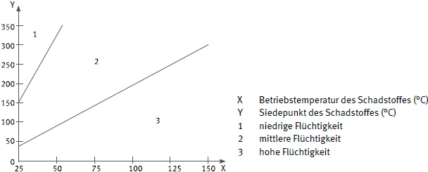
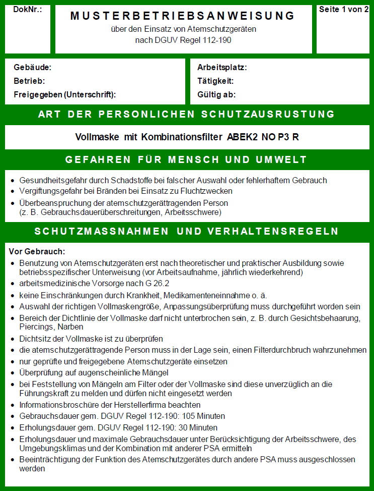
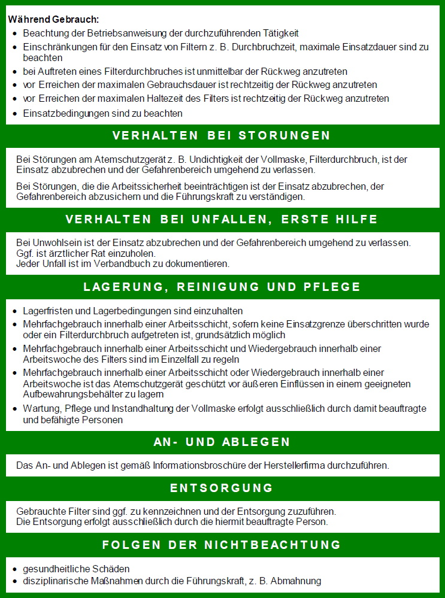
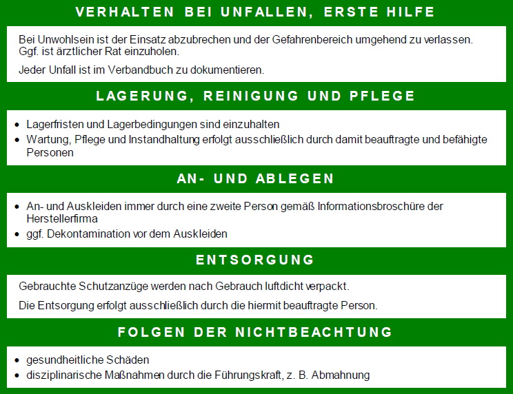

Die im Folgenden dargestellte Methode ist eine Umsetzung des Control Banding Ansatzes zur Bestimmung des Mindestschutzniveaus, falls keine Grenzwerte für die in der Luft befindlichen Schadstoffe festgelegt sind oder eine messtechnische Ermittlung der Schadstoffkonzentration nicht möglich ist.
Hierbei werden die den vorliegenden oder erzeugten chemischen Stoffen oder Gemischen zugeordneten H-Sätze (Hazard Statements - Gefahrenhinweise) verwendet. Die Gesundheitsgefährdung durch inhalative Aufnahme ergibt sich zudem aus der verwendeten Schadstoffmenge und ihrem Staubungsverhalten oder ihrer Flüchtigkeit.
Die Gefahrenhinweise durch H-Sätze beschreiben Gefährdungen, die von den chemischen Stoffen oder Gemischen ausgehen. Sie werden im Rahmen des GHS-Systems (Global Harmonisiertes System zur Einstufung und Kennzeichnung von Chemikalien) angewendet.
Diese Methode ist bis zur Bestimmung eines erforderlichen Mindestschutzniveaus von 2.000 anwendbar.
Lieferanten müssen Informationen über die von ihnen verkauften Chemikalien angeben. Die Erstellung, Weitergabe und Aufbewahrung von Sicherheitsdatenblättern für alle EU-Mitgliedstaaten ist in der REACH-Verordnung verankert. Der Inhalt des Sicherheitsdatenblattes ist im Anhang II der REACH-Verordnung (EG) Nr. 1907/2006 detailliert geregelt. Es werden u. a. durch H-Sätze Informationen zu den gefährlichen Eigenschaften der Chemikalie bzw. eine Beschreibung des Gefährdungsniveaus in einfachen Worten dargestellt.
Beispiele für H-Sätze:
H335 = Kann die Atemwege reizen.
H332 = Gesundheitsschädlich bei Einatmen.
H331 = Giftig bei Einatmen.
Nachdem eine Chemikalie nach ihren Auswirkungen auf die Gesundheit eingestuft wurde, wird u.a. der entsprechende H-Satz auf dem Behälteretikett oder separat mit der Chemikalie, zusammen mit ergänzenden Informationen, angegeben. Es kann mehr als ein H-Satz vorhanden sein.
Die Einstufung gefährlicher Stoffe erfolgt nach der Umsetzung der europäischen Verordnung 1272/2008 über die Einstufung, Kennzeichnung und Verpackung von Stoffen und Gemischen (CLP-Verordnung).
Für Schadstoffe, die sich auf die Atmungsorgane auswirken können oder die über den Inhalationsweg eine Sensibilisierung oder Krebs erzeugen können, werden deren relevante Gefahrenhinweise nach der Höhe der Gesundheitsgefährdung einer von fünf Gruppen (HHG = "Health Hazard Groups") zugeordnet:
HHG - A "Reizstoff"
HHG - B "schädlich"
HHG - C "toxisch"
HHG - D "sehr giftig"
HHG - E "Sonderfälle", d. h. mutagene, karzinogene, sensibilisierende Wirkung auf die Atemwege
Diese Methode erfolgt in vier Schritten zur Bestimmung des minimal erforderlichen Schutzniveaus.
Schritt 1: Gruppeneinteilung der Gesundheitsgefährdung (HHG)
Bestimme die Gesundheitsgefährdungsgruppe(n) (siehe Tabelle 36) für alle während der Tätigkeiten verwendeten oder prozesserzeugten Stoffe.
Für diesen Schritt ist das Sicherheitsdatenblatt oder andere veröffentlichte Sicherheitsdaten der relevanten Stoffe bzw. Gemische erforderlich.
Tabelle 36 Gruppeneinteilung der H-Sätze nach Art der Gesundheitsgefährdung
| Gruppen der Gesundheitsgefährdung A bis E (HHG) | ||||
| A | B | C | D | E |
| H315 | H302 | H301 | H300 | H334 |
| H319 | H312 | H311 | H304 | H340 |
| H336 | H332 | H314 | H310 | H341 |
| EUH66 | H371 | H317 | H330 | H350 |
| H318 | H360 | H351 | ||
| H331 | H361 | EUH70 | ||
| H335 | H362 | |||
| H370 | H372 | |||
| H373 | EUH201 | |||
| EUH71 | ||||
Schritt 2: Bestimme die Menge des verwendeten Schadstoffes
Bestimme und notiere die Menge der verwendeten Schadstoffe gemäß den Kategorien in Tabelle 37, basierend auf der Gesamtmenge, die verwendet oder verarbeitet wird.
Tabelle 37 Menge des verwendeten Stoffes bzw. Gemisches
| Menge des verwendeten Schadstoffes bzw. Gemisches | |
| klein | Gramm oder Milliliter |
| mittel | Kilogramm oder Liter |
| groß | Tonnen oder Kubikmeter |
Schritt 3: Bestimme das Staubungsverhalten bzw. die Flüchtigkeit des verwendeten Schadstoffes
Tabelle 38 Grad des Staubungsverhaltens
| Grad des Staubungsverhaltens des ermittelten Schadstoffes | |
| niedrig | Pellets, wachsartige Flocken und pillenartige Feststoffe, die sich nicht leicht auflösen. Es wird keine Staubwolke erzeugt und wenig oder kein Staub wird emittiert. |
| mittel | Kristalline körnige Feststoffe und Staub (sichtbar, setzt sich schnell ab). Rauch oder Nebel bilden sich nahe der Tätigkeit, verteilen sich jedoch sehr schnell. |
| hoch | Feines Pulver, Rauch oder Nebel. Staubwolken, Rauch oder Nebel bilden sich und bleiben einige Minuten in der Luft. |

Abb. 50 Flüchtigkeitsdiagramm
Schritt 4: Bestimmung des erforderlichen Mindestschutzniveaus
Bestimme anhand der ermittelten HHG(s), der Menge(n) und des Grades des Staubungsverhaltens oder der Flüchtigkeit der verwendeten Schadstoffe das erforderliche Mindestschutzniveau anhand der Tabelle 39.
Tabelle 39 Erforderliches Mindestschutzniveau
| Gruppe der Gesundheitsgefährdung (HHG) | Menge | Mindestschutzniveau Staubungsverhalten/Flüchtigkeit | ||
| niedrig | mittel | hoch | ||
| A | klein | – | – | – |
| mittel | – | 4 | 10 | |
| groß | 4 | 10 | 30 | |
| B | klein | – | 4 | 4 |
| mittel | – | 10 | 30 | |
| groß | 10 | 30 | 250 | |
| C | klein | – | 4 | 4 |
| mittel | 10 | 10 | 30 | |
| groß | 30 | 30 | 250 | |
| D | klein | 10 | 30 | 250 |
| mittel | 30 | 250 | 250 | |
| groß | 30 | 250 | 2000* | |
| E | klein | 10 | 30 | 250 |
| mittel | 30 | 250 | 250 | |
| groß | 30 | 250 | 2000* | |
* gemäß Tabelle 2 sind Atemschutzgeräte mit einem Schutzniveau > 1000 auszuwählen
Die folgenden Musterbetriebsanweisungen müssen durch arbeitsplatzspezifische Angaben ergänzt werden.


